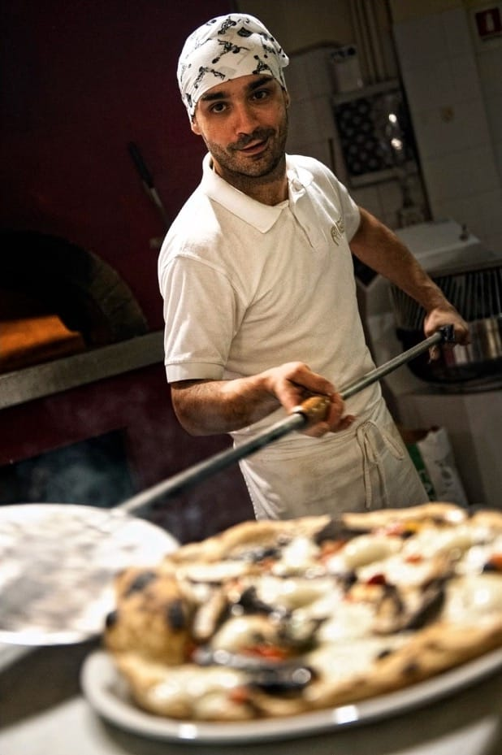

Il nostro team
MATAS54 riflette la visione comune di Stefano Morini e Antonio De Iure, frutto di esperienze di vita diverse e complementari e oggi propone Pizza & Taglieri.
Stefano, con la passione per il suo lavoro e la professionalità acquisita negli anni, attraverso la gestione di locali di successo, l’ Osteria del tempo perso a Senigallia, Via Giannelli 3 e oggi il Caffè Guasco, porta la sua competenza nella selezione di prodotti di alta qualità che propone in un ambiente caldo e accogliente, dal tono informale e familiare che invita alla convivialità.
Antonio, che avendo acquisito la sua esperienza nell’ambito di un business di produzione artigianale di carne e salumi ne ha fatto la passione di una vita, a cui riviene dopo un percorso professionale internazionale nel settore finanziario, porta al MATAS54 le nuove tendenze del fooding.
Enzo Ercole, terza generazione di pizzaioli, cresciuto a Senigallia, a fianco del padre al Vicoletto da Michele, formatosi sul modello che fonde ricerca e tradizione, arricchito poi da esperienze all’estero e dalla creatività personale, propone una pizza che attraverso l’uso di ingredienti di alta qualità, farine di produzione locale e una lunga lievitazione, è in grado di interpretare e soddisfare le nuove esigenze di giovani e meno giovani.